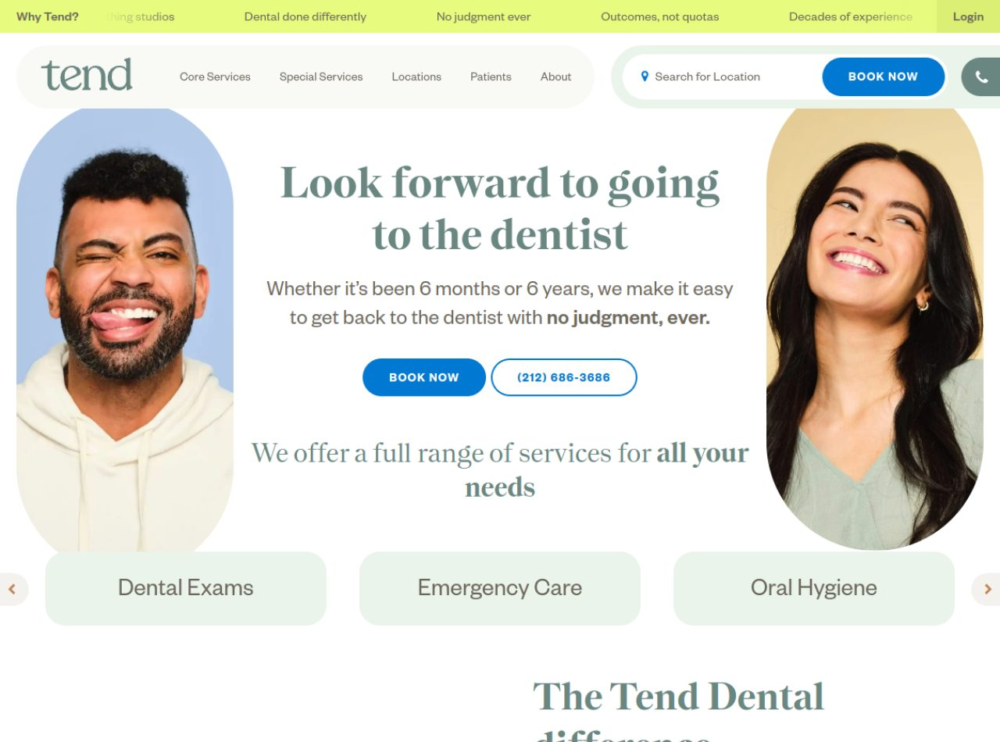
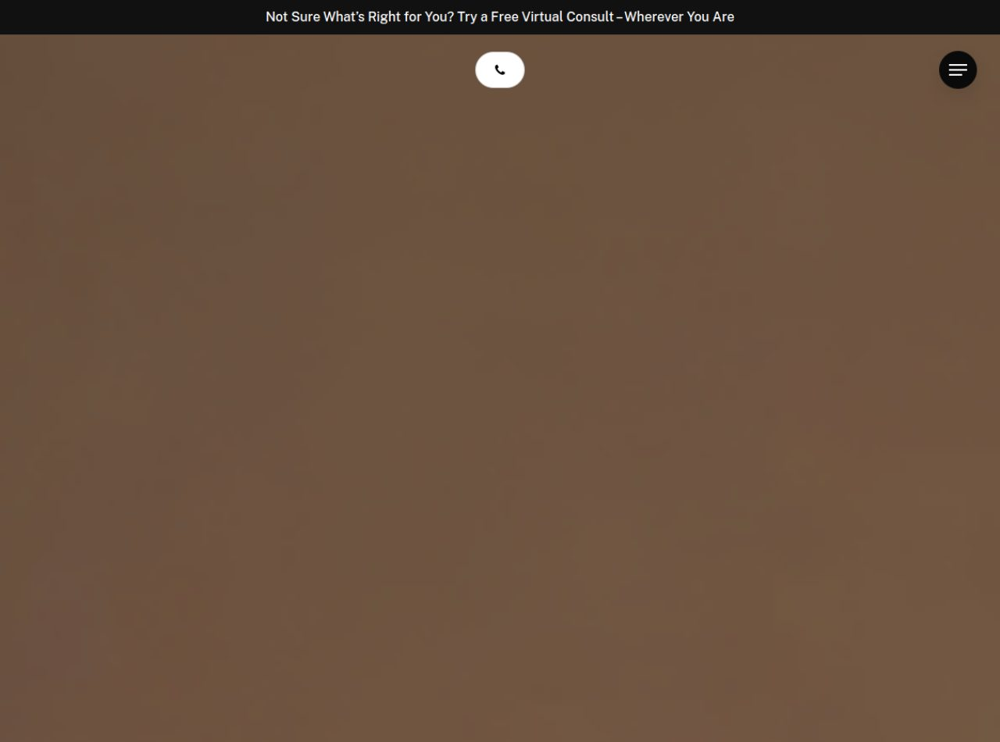
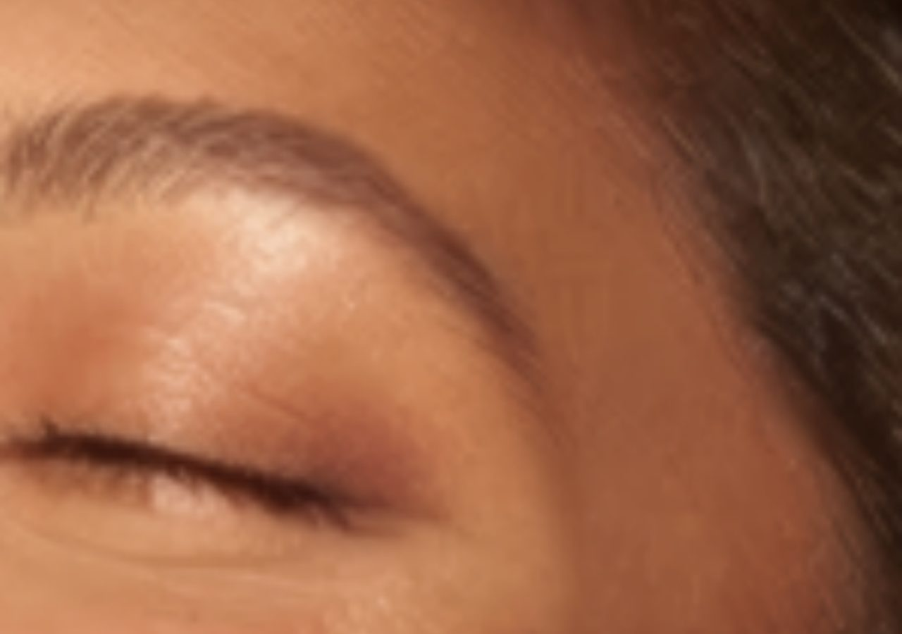
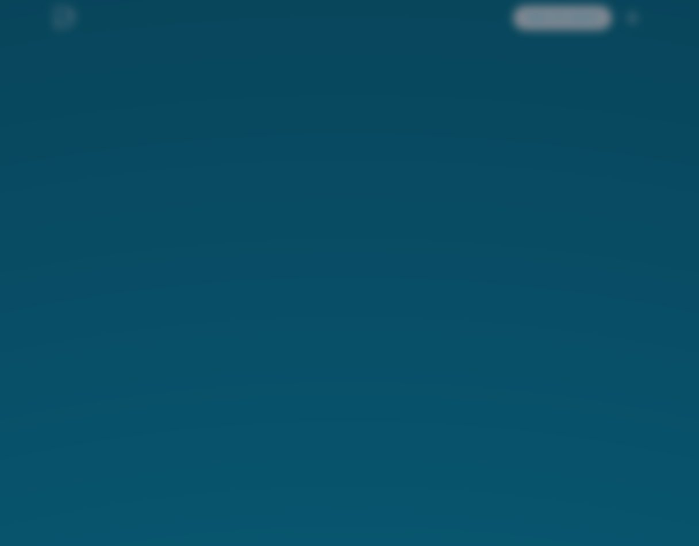

El sector más grande de la base (87 clínicas dentales en Neiva). Análisis de 3 webs referentes que convierten la odontología en una experiencia deseable, y qué debemos replicar.
Diseño emocional, odontología de lujo y SEO en español.

Retratos reales y diversos, sonrisas y guiños auténticos, recortados en formas de arco sobre fondos pastel. Cero "stock de dientes perfectos". Humaniza la marca.
Formas orgánicas redondeadas, navegación en "píldora" flotante, carrusel de chips de servicio, microtransiciones suaves. Todo transmite calma.
Barra superior de propuestas de valor (por qué elegirlos) → nav pill + buscador de sede + BOOK NOW → hero simétrico (retrato-texto-retrato) → chips de servicios. Muy escaneable.
Serif suave color salvia para titulares grandes; el mensaje emocional manda sobre el técnico. Negritas selectivas ("no judgment, ever").
Arquitectura por sede ("Locations") y por servicio; buscador de ubicación en el hero. SEO local multi-clínica.
Doble CTA (BOOK NOW nav + hero) + teléfono visible + propuestas de valor arriba del todo. Elimina fricción y miedo a la vez.


Video hero + fotografía editorial de belleza (primeros planos de piel/rostro). Se siente cosmética de alta gama, no consultorio. Eleva el ticket percibido.
Rive para animaciones interactivas (raras en dental), carruseles Swiper/Flickity para los antes/después. Efecto "wow" premium bien dosificado.
Nav ultra-minimal (solo teléfono + hamburguesa) para no distraer del video. Secciones estrella: "Smile Transformations" y "3 Step Smile Makeover Plan".
Mucho espacio negativo, tipografía fina y elegante. La galería antes/después es el héroe real de la página, no el texto.
Meta enfocada en "minimally invasive, aesthetically driven… straighten"; JSON-LD; llamada a WhatsApp desde la meta description. Posiciona por estética dental.
Oferta de entrada sin fricción: consulta virtual gratis "estés donde estés". Captura al indeciso que aún no quiere ir presencial.

Fotografía de pacientes reales sonriendo, sobria y de marca (teal). No busca lujo: busca confianza y cercanía para un público amplio.
Ligeros (carga diferida de imágenes). La prioridad es la velocidad y el SEO, no el espectáculo. Coherente con una web de volumen de tráfico.
Hero simple con promesa de facilidad + gran biblioteca de páginas por tratamiento. La home es solo la punta de un iceberg de cientos de páginas SEO.
Limpia y funcional; el peso está en los textos de servicio y en el enlazado interno, no en el impacto visual.
El modelo a copiar en español. Title = "Clínica Dental en Barcelona, Badalona y Hospitalet" (ciudad + servicios). Meta cargada de keywords: implantes, Invisalign, estética dental. JSON-LD, y tracking de conversiones que hashea email/teléfono para medir campañas. SEO + Ads medibles.
Ángulo "te lo ponemos fácil" (financiación, primera visita, facilidades). Cada página de tratamiento termina en un formulario/llamada. Todo medido con analítica avanzada.
Qué toma prestado cada referente.
| Dimensión | Tend | Rüh Dental | Propdental |
|---|---|---|---|
| Fortaleza | Emoción / anti-miedo | Lujo / estética | SEO / medición |
| Titular | "Look forward to the dentist" | Foco en sonrisas transformadas | "Te lo ponemos fácil" + keyword-ciudad |
| Imagen | Retratos reales en arcos, pastel | Editorial de belleza + video | Pacientes reales, marca teal |
| Efectos | Formas orgánicas, pills | Rive + carruseles antes/después | Mínimos (velocidad) |
| Gancho | "Sin juicios, nunca" | Consulta virtual gratis | Facilidades + Ads medibles |
| Qué robamos | Titular emocional + rostros reales + paleta calmada | Galería antes/después + plan en 3 pasos + consulta gratis por WhatsApp | SEO por "tratamiento + Neiva" + medición de conversiones |
*_full.png). Nota: hero de Rüh es video (no capturable en imagen estática); Propdental carga imágenes de forma diferida.